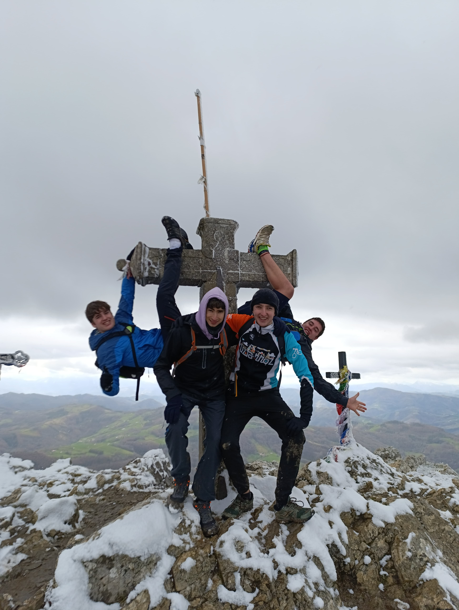

Reunión informativa, 28 de marzo en Pagoeta Mendizale Elkartea (18:30). Apertura de las inscripciones el 1 de abril.
1-10 de agosto
A pie desde Zarautz a Beizama
Sobre la asociación
Bugi Bugi Gazteentzako Aisialdi elkartea, tal y como indica su nombre, es una oferta de ocio dirigida a jóvenes de la ESO y ubicada en Zarautz. Hemos querido proponer algo innovador tanto a los jóvenes del lugar como a los de los alrededores, ofreciéndoles una oportunidad que hasta ahora no han tenido en el municipio. De hecho, nos hemos dado cuenta de que en la localidad hace falta una oferta específica para este rango de edad, ya que muchas organizaciones o iniciativas no ofrecen grandes servicios dirigidos a ellos, dejando de lado sus necesidades.
¿Qué queremos conseguir?
Entre la juventud falta el interés por la montaña y por descubrir los lugares de alrededor, en su tiempo libre prevalece la tecnología, la atracción hacia el euskera no es suficiente y, más allá del deporte, las relaciones fuera del ámbito escolar no se refuerzan demasiado.
Así, como alternativa para disfrutar del verano, varios monitores de distintos grupos de ocio nos hemos unido para dar vida a este proyecto.
¿Cómo trabajamos?
En nuestra asociación de tiempo libre nadie es más que nadie y todos colaboramos. Como es natural, tratamos de repartir los trabajos y utilizando cada uno sus puntos fuertes hasta ahora hemos conseguido un muy buen resultado. Además, debemos mencionar que se trata de un proyecto que estamos llevando a cabo voluntariamente, es decir, que no tenemos ánimo de lucro. Empezamos con el proyecto debido al interés mostrado por varios jóvenes y ha tomado muy buena forma. Además, al reunir a monitores de diferentes grupos de tiempo libre, las experiencias de todos nos han resultado muy valiosas en el proceso.
Campamentos 2025

Monitores: Asier, Jokin, Iñaki y Aratz
Montaña: Hernio
Cuándo: Probando el recorrido
En estos campamentos, desde el 1 de agosto hasta el 10 de agosto , realizaremos cinco días de ruta de monte en monte. Comenzaremos en Zarautz y pasaremos por lugares tan hermosos como Indamendi, Aizarna, Sañu, Azpeitia, Inda, Gazume y Hernio. Después, pasaremos otros cinco días en Beizama.
Días de juegos y aventura
Convirtiéndonos en exploradores, cada día tendremos que superar un nuevo reto.
Comienzo por la montaña
Durante los primeros cinco días, realizaremos las actividades, comidas, veladas y dormiremos en frontones y en la propia montaña.
Llegada al albergue y más aventura
Al terminar la ruta, nos dirigiremos a un cómodo albergue en Beizama. ¡La aventura no ha hecho más que empezar!
El euskera y la naturaleza como protagonistas
Todas las actividades las realizaremos en euskera, de manera natural y divertida. Será una oportunidad perfecta para dejar a un lado los dispositivos electrónicos y conectar con la naturaleza.
¡Ven y vive una experiencia inolvidable, llena de montaña, deporte y un ambiente de compañerismo!
Etapas de montaña
Inscripción
Intentamos que estos campamentos sean lo más asequibles posible, porque creemos que este tipo de experiencia debe estar al alcance de todos los jóvenes. Para ello, todas las personas que trabajamos en los campamentos, tanto monitores como responsables, lo hacemos de forma 100% voluntaria.
En primer lugar, del 1 al 13 de abril, cualquier joven de la ESO podrá inscribirse en los campamentos. La inscripción podrá hacerse en grupos de un máximo de 3 personas. Una vez finalizado el plazo, si el número de inscritos supera el aforo del albergue, se realizará un sorteo el 15 de abril. En ese momento se explicará el proceso de pago.
Por cada joven 240€
¿En qué se emplea el dinero?
- comida
- albergue
- material
- ...
- transporte de material
- ropa
- autobús de vuelta